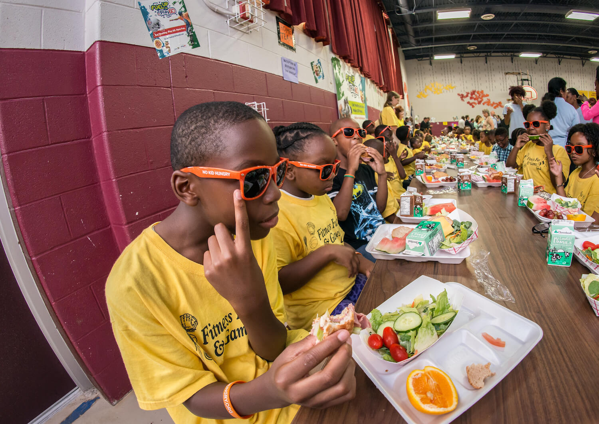

The childhood obesity crisis started before Covid-19.The pandemic has made it much worse.
Lauren A.George / MediaNews Group via Getty Images
Experts fear that the profound disruptions of 2020—including changes to school lunch—may have a lasting, harmful legacy.
Earlier this year, Anisha Patel, a Stanford University pediatrics professor, started to notice a troubling trend: Child patients at the Atherton California clinic where she works have gained a distressing amount of weight.
Since the spring, she says, her patients’ growth curves, which track body mass index, have climbed their clinical charts steeply.In a matter of months, many kids’ chartlines raced past the 85th percentile, which means a patient is overweight.Today, most have broken into the 95th percentile, which is when a child becomes clinically obese.The pattern is so common, Patel says, 'that when we do see patients that aren’t on that trajectory, we’re actually kind of surprised.'
It’s not just her.Angela Goepferd, a pediatrician at Children’s Minnesota, a hospital in Minneapolis, says children at her outpatient clinic frequently weigh 10 or 20 pounds more than they did in March.Lisa Denike, the chief of pediatrics at Northwest Permanente in Portland, Oregon, estimates that one-third of her patients have become overweight or obese over the same period.
As the pandemic rages on, the nation’s attention has focused on the immediate dangers of the coronavirus: the ongoing infection, hospitalization, and deaths of adults.But more than a dozen pediatricians and public health experts interviewed by The Counter say that a more subtle, insidious outcome should not be overlooked: a predicted surge in childhood weight gain, caused by the closure of schools.
Before the pandemic, the childhood obesity rate was already at an all-time high of 19 percent, according to the National Center for Health Statistics.But Joseph Workman, a University of Missouri sociologist who focuses on educational inequality, thinks that number is likely higher now.This summer, in a letter to the medical journal
Obesity , he projected the rate would rise more than 4 percent if students remained out of school for five months.If so, that would mean an additional 2.4 million school-aged children became obese between March and August, bringing the total to nearly a quarter of all American children, according to an analysis by The Counter.
'It’s really a case of one health crisis exacerbating another health crisis,' Workman said.'It’s taking what’s already considered a crisis of childhood obesity and making it worse.'
Workman’s projection is based on the surprising, but well-established fact that American children tend to gain weight when they’re out of school.For millions of kids, the pandemic year has resembled an extended summer.There’s been less physical activity, with no gym class, no commute, and many hours spent in front of screens.But the sedentary nature of remote learning is only one part of the story.Diets have worsened, too.
In a normal year, school meals are a critical source of calories and nutrition for kids across the country.When schools close down for the season, they tend not to eat as well.During the pandemic, that change has been starker and longer-lasting.Despite the best efforts of administrative staff and cafeteria workers, millions of children missed out on school meals in 2020.At the same time, the meals that were served just weren’t as healthy as before.It’s a disruption that underscores the key role that school food has come to play in the lives of U.S. children and adolescents: When it’s not there, their health suffers.
Historically, kids lose some of that summer weight when they return to the classroom.But this year, summer-like conditions have dragged on for ten months—and may not end any time soon.That’s why researchers fear the school closures may take a significant toll on an entire generation of school-aged children, potentially impacting their health for years to come.After all, children who become obese usually stay that way: 67 percent of kids who are obese at 5 years old will be obese at 50, according to one longitudinal study.And so will nearly 90 percent of obese adolescents, increasing their risk for conditions like diabetes and hypertension, and potentially fatal medical events, like heart attacks and strokes.
'It’s unlikely that a child who gains excess weight will lose it, without a dramatic intervention,' said Erin Hager, a University of Maryland nutritional epidemiologist, and Baltimore County school board member.'We can’t just sit back and see what happens when these kids turn 30 or 40 years old.We may need to act fast to address this.'
In normal times, the National School Lunch Program (NSLP) is a powerhouse.The $15-billion federal program covers costs for 100,000 public and private schools that serve meals to around 30 million students, or just over half of all American children.Among them, 22 million eat for free, or pay 40 cents per meal, because their household income is at or below 185 percent of the poverty line.After the Supplemental Nutrition Assistance Program (SNAP)—formerly known as food stamps—it’s America’s largest anti-hunger support.Millions of low-income children rely on school meals for two-thirds of daily nutritional needs, according to researchers at the Harvard School of Public Health and the Georgetown Law Center.
Despite all the jokes and urban legends, school food has actually become some of the healthiest food many kids eat, making it a vital part of public efforts to lower childhood obesity.Credit is due largely to the Obama administration, whose Department of Agriculture (USDA), which oversees the program, significantly strengthened the nutrition standards for breakfast and lunch for the first time in decades.
Before the pandemic, schools needed to hit a range of nutritional benchmarks to be federally reimbursed for meals.They had to serve a certain amount of fruit every day, and a range of vegetables, from leafy greens to legumes, every week.They had to serve breads, pastas and muffins made with at least 50 percent whole-grain flour, in response to evidence that foods rich in dietary fiber help lower body weight.They also had to cut back on saturated fats, while conforming meals to age-specific limits on calories and sodium, as part of an effort to drive down hypertension in teenagers, which can lead to heart disease when they become adults.
Evidence suggests the changes impacted child health for the better.Students who eat school meals every day consume more fruits and vegetables, and fewer fats and sugars, than those who don’t.Studies show they have better diets, and lower rates of unhealthy weight gain.But it’s not just that school lunch is healthier than it used to be.It’s likely healthier than a bag lunch brought from home.
'It made a difference on what they were eating, their preferences, their weight,' said Sheila Fleischhacker, a Georgetown Law professor and former USDA nutrition advisor.'And it was amazing.'Along with changes to other nutrition programs, 'we were really starting to see that this could be a venue to address inequities in adult health care outcomes.'
But in March, the reforms, which have faced pushback as onerous and costly for schools, were quickly unwound.As schools switched to remote learning, nutrition staff could no longer count on students showing up to cafeterias to be fed.The unprecedented event of nationwide school closures demanded unprecedented action, and in response, USDA issued over two dozen emergency waivers to allow schools to get meals to kids by any means necessary.
Some of the waivers loosened requirements around congregate feeding, and gave schools permission to run socially distanced pick-up sites in parking lots and on sidewalks, or enlist idled bus drivers to deliver meals to homes and community centers.Out went lunch trays, and in came brown bags and bulk boxes.Other waivers directly addressed a national rise in food insecurity.A much-applauded change allowed schools to serve free meals to all children, regardless of where they lived, their income status, or what school they attended.
But it wasn’t just logistical ingenuity that helped feed so many children.USDA also freed schools from nutrition guidelines.A waiver issued in March gave schools permission to request meal pattern exemptions, releasing them from the requirement to serve whole grains, fruits and vegetables, and limit calories and sodium.Officially, the waiver is meant to buffer schools from supply chain disruptions, but it’s also granted for financial hardship, said Jennifer McNeil, a former Encinitas, California school nutrition director who now consults for 50 state districts.
The agency also made it easier for schools to switch from NSLP to the Summer Food Service Program (SFSP).This program, which is designed for camps, churches, and daycare centers, allows schools to be reimbursed for meals at higher rates—but it also has weaker nutrition standards than typical school lunches do during the academic year.Full-fat, flavored milk, which is sugared, is allowed.Sandwich breads and breakfast muffins can be made with more enriched flour.There are no limits on calories, sodium, or saturated fat.And vegetables aren’t required at all.
'There are some key nutrients that kids are missing, when they used to get two-thirds of their calories and nutrients from the school lunch program, and now we’re asking them to rely on the summer feeding program,' Fleischhacker said.'Summer was designed as a short-term thing, not for kids to be depending on it for over a year.'
With the pandemic now in its tenth month, that’s exactly what’s happening.School nutrition consultants interviewed by The Counter bemoan an unfortunate side effect of the switch to the SFSP, and other emergency waivers: They lessen the nutritional quality of the food children are eating.By and large, experts aren’t second-guessing the changes; like a natural disaster, the pandemic has made old standards and processes impossible.Nevertheless, many kids are eating worse meals during this challenging period in their lives.
According to a nationwide survey of over 1,600 school districts conducted by the School Nutrition Association (SNA), a trade association for cafeteria workers, schools have cut back on cooking, and pivoted to serving shelf-stable and frozen foods in recent months.From a logistical standpoint, that makes sense.Short on staff, schools have struggled to cook and package meals.Plus, processed foods last longer and can be easier to transport—key considerations for families that may be picking up multiple days’ worth of school meals at a time.
Still, those foods are usually higher in salt and sugar than scratch-cooked meals.McNeil and other dietitians would prefer children avoid those ingredients, especially at a time when they’re getting less exercise.'A lot of people were making homemade pasta sauce, or rice bowls with stir-fried veggies, and now they’re serving a frozen burrito,' she offered, as an example.'When you move from scratch cooking to processed foods, the label is longer, and you have more preservatives.It’s just not ideal.'
Maureen Pisanick, a school nutrition consultant for 30 Ohio districts, adds that Pop-Tarts, Uncrustables, and Pillsbury cinnamon rolls have become popular options for take-home meals.For seven years, her schools offered salad bars stocked with fresh produce and dressings, and trained kids to eat legumes by sneaking them into salsas.The waivers have allowed some of them to revert to cheaper, starchier vegetables, like steamed corn and fried potatoes.
Pisanick is concerned that eating more salty foods and sugary snacks, and fewer fiber-rich vegetables and grains, will have an impact on developing children.But it’s not only their immediate, short-term health she’s worried about—it’s also their palates.Eating this way for a year could cause some students to lose their tastes for mushrooms, peppers, and black beans, and for the whole-wheat breads, pastas, and rices that she and others have seen fall off menus.
Because of the emphasis on better food and better habits, many experts have been discouraged to see the Obama-era standards waived.
'Right now, the issue is that people don’t have enough to eat, so you want to provide them with the most kind of safe food that you can,' said Punam Ohri-Vachaspati, an Arizona State University nutrition professor who leads a longitudinal study of student health in four low-income New Jersey school districts.'I hope they’re not going to continue these waivers beyond what is necessary.'
But not everyone agrees that the nutrition waivers, many of which have been renewed through June 2021, have been detrimental to student health.Craig Gundersen, a University of Illinois economist who studies food insecurity, said Obama’s school lunch reforms hurt low-income children by limiting their calorie intake.He applauds the waivers, which have made it easier for schools to feed hungry students.
'We’re in a pandemic, and this sort of quibbling about not having enough fresh fruits and vegetables is just silly,' he said.'Moving away from these nutrition standards, and ten years of bad policy, is a good thing.'
But the reality is that the changes haven’t necessarily succeeded in helping schools feed more kids during the pandemic.Despite best efforts, participation has plummeted.
In March and April, researchers estimated that schools served 170 million fewer free and reduced-price breakfasts and lunches every week.The government hasn’t released data about school meal participation since then, citing 'significant issues' with accuracy caused by the pandemic.But other sources indicate that rates are still low.In September, 93 percent of SNA survey respondents said they were serving fewer meals than a year ago; among them, 54 percent said lunches were down by 50 to 100 percent.
Why is that happening?At a time of widespread food insecurity, shouldn’t kids be eating more school meals than usual, especially if they’re free?
For schools that have gone remote, feeding kids who aren’t physically present continues to be a challenge.The fewer kids they feed, the more that challenge is likely to worsen.Schools are refunded by the government based on the number of free and reduced-price meals they serve.In the pandemic, this has created a vicious circle.When kids stop showing up, their budgets start to shrink; as budgets shrink, schools are less able to offer high-quality food or innovative pickup and delivery options.
But it’s also possible that the nutrition waivers, which Gundersen and others say are needed to feed more children, may themselves be to blame.They allow schools to serve lower-quality meals, and some families just aren’t interested in the offerings that result.Parents’ perception of school meal quality has long been a major factor in participation.In her longitudinal study, Ohri-Vachaspati and other researchers found that children whose parents perceive school lunch as 'healthy' are nearly four times as likely to receive meals as those who perceive them as 'unhealthy.'
Since March, around 30 parents in six school districts in the San Joaquin Valley, a sprawling farm region in central California, have participated in school meal focus groups.Their conversations arebeing shared with Patel and Christina Hecht of the University of California’s Nutrition Policy Institute for a study about nutrition and food insecurity.As low-income families, they depend on schools to feed their children, and especially the undocumented immigrants among them, who are ineligible for government assistance such as SNAP or pandemic unemployment compensation.Nevertheless, at a time of great need, they’re turning their backs on the free meals, which they don’t believe are healthy or nutritious, said Veva Islas, a program director at Cultiva La Salud, the Fresno-based nonprofit that organizes the focus groups.
One of those parents is Elvira, a mother of three school-age children.Before schools closed, her kids ate hot meals in the cafeteria, where standard fare included burritos, rice bowls, and chicken and potatoes.In the spring, she picked up lunches for them at a local middle school, and was 'really surprised' by the contents: cookies, juice boxes, canned fruit, beef jerky, and frozen enchiladas.She microwaved them, and found them runny and smothered in tomato sauce.
'Excuse my language, but it was trash,' Elvira said, through a Spanish translator.'They considered that to be lunch, but it wasn’t worthy for anyone to eat.'She threw out the enchiladas and left the snacks in the laundry room for other tenants in her apartment building.She tried the meals three more times, but the quality didn’t improve, and so she hasn’t gone back since July.Without the benefit of those meals, she’s been in the difficult position of having to spend more money on feeding her family, while at the same time getting by on less, because her husband’s construction earnings have gone down.(Her last name and location were withheld as a condition of participation in Patel’s study.)
Eliza Kinsey, a Columbia University researcher, worries about what happens to families like Elvira’s when they start to miss school meals.She says that past studies show that kids who pack their own lunches or eat more meals at home tend to have a diet that’s higher in caloric, but nutritionally deficient foods, like chips and processed meats, and miss out on fresh fruits, vegetables, and whole grains that are typically offered at school.
In part, that’s a function of economic status: The food-insecure families that depend on school meals for nutrition are poorer, and less likely to be able to afford or access healthy meals on their own.Research has long established the link between food insecurity and obesity.As families like Elvira’s fall deeper into poverty, they are more likely to turn to cheap, energy-dense foods that they can afford.Starvation is not common in the United States.Instead, unhealthy weight gain is the 'toxic consequence' of economic insecurity.
'If you’re low-income, you’re dependent on the educational system to furnish food that your kid is going to eat,' said Islas.'Our families should be able to benefit from the meals, and feel like the food they’re getting from the school district is going to help them out.But they’re not.'
The combination of poorer school meals and fewer of them served may seem like an unprecedented crisis for schoolchildren.But in fact, this confluence occurs every year, like clockwork.It’s a hallmark of the summer—a time of year that’s reliably associated with unhealthy diets, less physical activity, and weight gain.
During summer, participation in child nutrition programs plummet.Only one in six children who receive free or reduced-price school lunch also eat meals in the Summer Food Service Program, even though they’re eligible.That’s one reason why kids eat poorly when they’re out of school; a study of Boston summer campers found them eating meals rich in salty snacks and sweet desserts.At the same time, the government-backed meals that are served just aren’t as healthy—a function of the season’s weaker nutrition guidelines.A study of 340 school feeding sites in Ohio found that summer breakfasts and lunches were high in carbohydrates and low in dietary fiber—caloric, but not filling.(Still, says Sheila Fleischhacker, the Georgetown professor, SFSP meals are likely healthier than what kids eat at home.)
Exercise is a factor, too.Despite the images that summer conjures of kids running through fields, or swimming in pools, it’s actually the time of year they become more sedentary.A recent study found that children spend around 24 fewer minutes exercising, and 33 more minutes in front of screens, during their summer break.Those poor diets and physical habits help explain why children experience unhealthy weight gain when school is out, as opposed to the academic year.And though American researchers haven’t yet released studies of children’s physical health during the pandemic, the similarities with the summer are so great that the investigators anticipate similar outcomes when it comes to obesity rates—if not worse.
In a 2016 analysis of data from 18,000 kindergarten and elementary students, Workman, the education sociologist, calculated that their obesity rate increased by 0.85 percent every month they were out of school, or roughly 2 to 3 percent per summer.The students lost some weight when they returned to classrooms, but not enough to reverse the summer gains.Overall, the obesity rate rose more than 1 percent every calendar year.
This year, he projected the health impact of the pandemic by doubling that out-of-school time.According to his estimates, five months of school closures would raise the childhood obesity rate in America by 4.25 percentage points.That figure does not account for the fact that many children’s out-of-school time has in fact quadrupled.Nor does it consider the impact that pandemic-induced food insecurity may have on weight gain.For those reasons, the projection, however staggering, is likely a conservative one.
'That is kind of a baseline of what we might expect, given the best of conditions,' Workman said.'But then you have the additional context of the pandemic, which I think would probably push it even higher than a normal summer break being doubled.'
But it won’t be all children who gain that weight.Andrew Rundle, a Columbia University epidemiologist, points to studies that show children of color tend to gain more weight during the summer than their white counterparts.The summer, he said, is when their weight gain tracks diverge, before realigning and running parallel again during the school year.Over time, those bumps add up, and drive permanent disparities between the groups.
For that reason, he expects the pandemic, insofar as it resembles the summer, to worsen the divide.According to the most recent data from the Centers for Disease Control, nearly 22 percent of Black children and 26 percent of Latinx children were obese before the pandemic, compared to 14 percent of white children.The new rates can’t be known until after children return to schools, Rundle said.But no matter the numbers, it’s almost certain that the pandemic’s health impacts will be unequal.
'We know what happens during a normal summer, and we’re arguing that this is equivalent to a completely abnormal summer that is three or four times longer than a regular summer,' Rundle said.'Anything I say about how big that difference will be is a complete guess.But if you look at the trends, and think through what the drivers are, you’re going to expect a magnification of these disparities.'
Researchers are confident that obesity rates have risen during the pandemic, but the long-term trends remain unclear.
Ohri-Vachaspati, the nutrition professor, knows from research like Workman’s that children’s weight does tend to drop, however slightly, during the school year.But, she predicts, the length and duration of the pandemic summer likely means a permanent, long-term hike.In two years, she predicts, 'our hypothesis is that the obesity rates will be higher' than they are today.'Even if the weights start to come down, they will not come down to the pre-pandemic area,' she said.
Of course, that’s just her hypothesis.Workman’s analyses of summer weight gain are based on studies of elementary students; what happens to middle and high schoolers during the summer isn’t as clear.Schools have never been closed this long, and this extended period of heightened food insecurity may result in changes that no one can foresee.Still, it’s likely that when the pandemic ends, schools and communities will need concerted efforts to counter the obesity trends that worsened while students were stuck at home.
The first step toward a return to normal, Ohri-Vachaspati said, will be to restore Obama-era school nutrition standards.During the pandemic, the Trump administration hasn’t just issued waivers that free schools from nutrition guidelines.It’s permanently overturned restrictions on sodium and the fat content in milk, and loosened whole-grain requirements.'We’ve started rolling back the progress we have made in schools,' she said.'We want to go back to where we were, on that trajectory of improving school meals, and serving children the most nutritious meals that we can.'
Not everyone agrees.Last week, the School Nutrition Association released its annual position paper, asking Congress to relax 'overly complex federal regulations' that 'divert resources from the mission of serving children,' and streamline child nutrition guidelines.The group reiterated its support for Trump’s long-term rollbacks, which it has said 'do not compromise the progress we’ve made for our students.'
And while the group did not call for more emergency waivers, it predicted that even after students return to classrooms, schools will continue to suffer from 'supply chain and economic disruptions [that] make it even more difficult to order and secure' items like whole-wheat breads and low-sodium cheeses.For that reason, 'regulatory flexibility' would be 'especially important' for the 2021-22 school year.
(School food companies interviewed by The Counter, such as Land O’Lakes and Fatcat Bakery, confirmed shortages of these items in grab-and-go formats, but not in the bulk form normally furnished to school kitchens.)
Even if the guidelines are restored, school meal programs, still reeling from the pandemic, will need help.Curt Ellis, the co-founder of FoodCorps, a school nutrition nonprofit, says that should come in the form of federal funding and infrastructure grants.An investment in better kitchens and cafeterias—which would allow schools to cook healthier, fresher meals—would also serve as a form of economic development.In 2009, President Obama’s stimulus bill offered $100 million in grants to schools to purchase new kitchen supplies, service equipment, and walk-in refrigerators and freezers, among other improvements.Over the next six years, another $100 million was authorized through appropriations bills, according to a Pew Charitable Trusts report.
'Too many schools are lacking in the kitchen facilities they need to convert from heat-and-serve to scratch cooking,' Ellis said.'If we give schools modern kitchen facilities, then they’re able to work with locally grown, minimally processed ingredients, and serve super fresh and healthy meals.'
But the longer-term solution may be more radical: Free school meals, for all.Previously, about a quarter of all schoolchildren received free breakfasts and lunch through an Obama-era program to cover costs in high-poverty schools.During the pandemic, USDA expanded the Community Eligibility Provision, as the program is called, to all students at all schools.Advocates say it should stay that way, forever.
'When teachers are handing out a math textbook in class, there’s no income test to decide which students get the book for free,' Ellis said.'But in many schools around the country, when you get up to the front of the line, there is a sorting based on whether you are getting a free or reduced price lunch, or paying full cost for your lunch.And the result is actually a whole lot of stigma and likely lower participation in school meals.'
Universal school meals would help families on the edge of poverty, who fear the draconian threat of lunch debt collection for unpaid meals.Schools could also benefit from a more efficient system, and potentially higher revenues, through more federal reimbursements for more meals served.Still, the proposal has been questioned by policymakers.The Heritage Foundation, a conservative think tank, has said that billions of dollars would be wasted on children who can afford their meals, and warned of school lunch 'ballooning into a federal food entitlement for every child.'
But an unprecedented health crisis, Ellis and others argue, demands an unprecedented response.
'If you follow the long-term journey of a child who suffers from food insecurity, those kids attain less education, are out sick more at work, progress less in their careers, and are forced out of the workforce younger, and ultimately die at an earlier age, with fewer of their dreams fulfilled,' he said.'Unless we, as a country, figure out how to bring schools back online in a way that prioritizes the health and well-being of our nation’s children, we’ll have a lifetime of consequences to grapple with.'
Posted On: 2021-01-19T05:01:00
Posted By: Sam Bloch

Content Date: 2021-01-19
Download Date: 2021-05-13
Document ID: L0C04C0OW